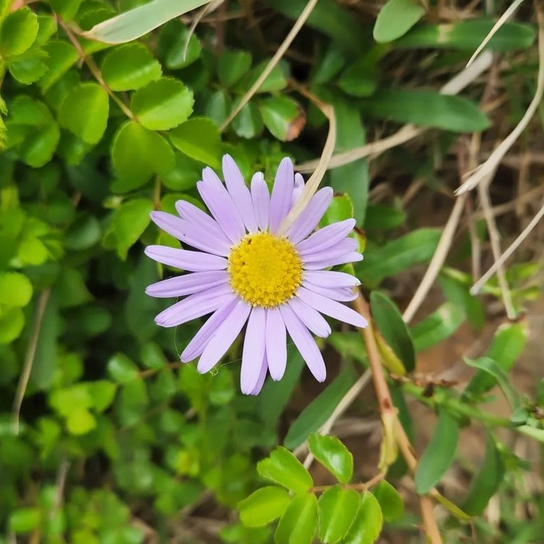
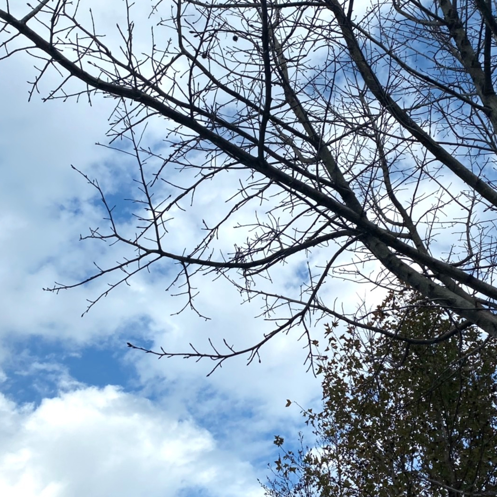
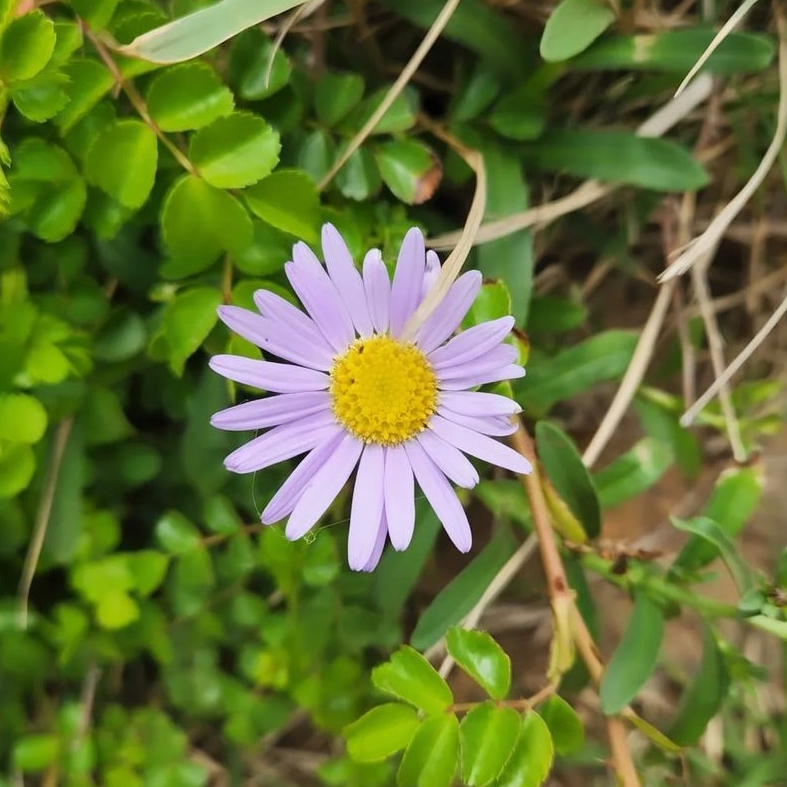
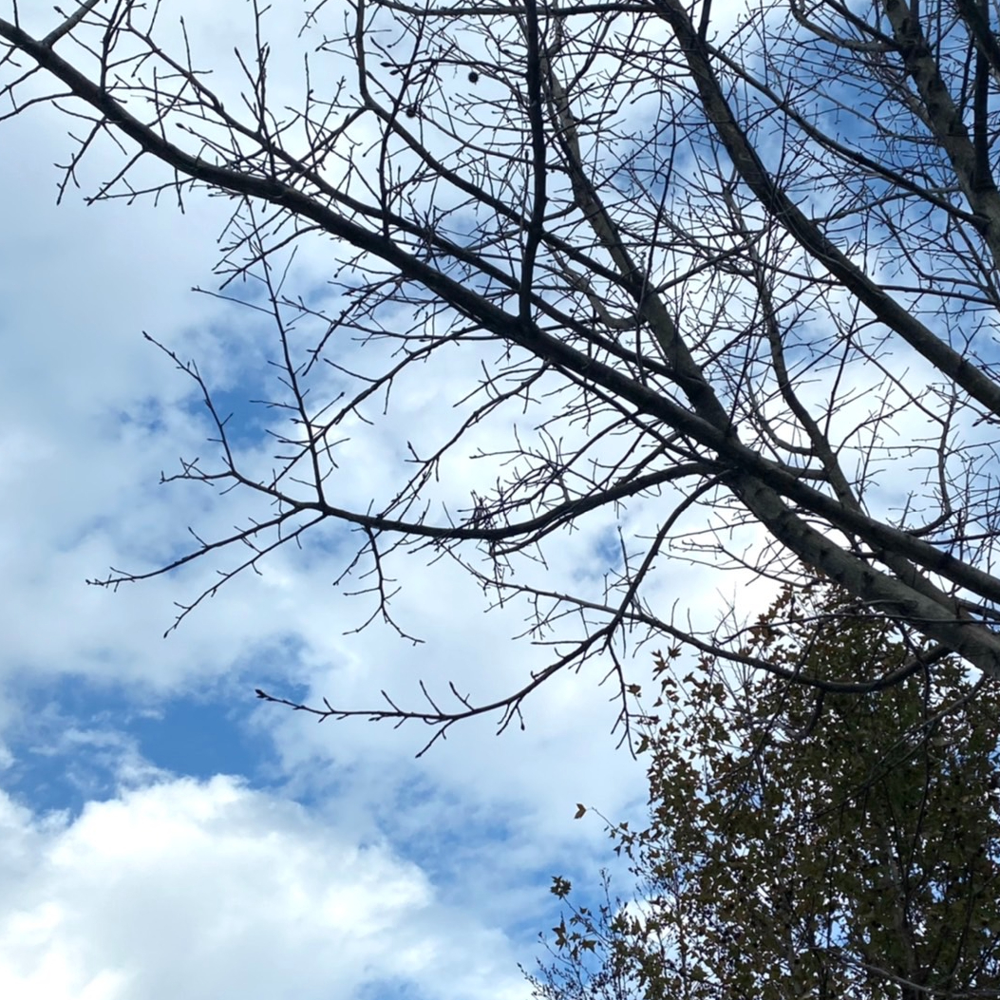

.˗ˏˋ♡ˎˊ˗ᴛʜᴇ ᴄᴏᴍᴘᴏsɪᴛɪᴏɴ ᴏғ ʟᴜɴᴀ˗ˏˋ♡ˎˊ˗
我的風格
 


 
悲觀的理想主義者、夢想家、共情能力十足。
身為內向者的我，思考模式是比較偏向情感型，也因為共情能力很強，所以總是默默的多愁善感。
外在的我是很樂於助人的類型，工作時喜歡團隊合作，雖然由於太過人際考量，導致行事優柔寡斷，但整體來說是個隨和的人。
內在的我是個理想主義者，我會透過對生活上的不滿意來促使自己成為更好的人，這樣的理想主義經常使我對自己抱有嚴苛的標準去處理事情。
有著敏感的情緒與豐富的想像力，他們會使我時常把事情無限放大，導致出現負面情緒。像是容易因為他人的言論而影響到自己，過度放大檢視自己，導致自卑與容易受創的性格。
這意味著我雖然有著強大的共情能力，但在於面對內心真實的自我仍有些許困難。因此我也期盼自己多加利用自己本身的優點，弱化性格上的缺陷，才能更好的提升自我能力。
以前的我總是聆聽他人的意見去摸索個人風格，但現在的我已經漸漸地在日常與自己相處之中明白，我的風格是以生俱來的，有優勢也有弱勢，能這樣清楚地了解自己，就足夠了。